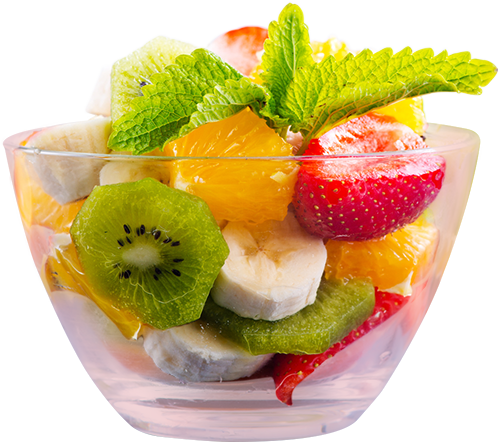
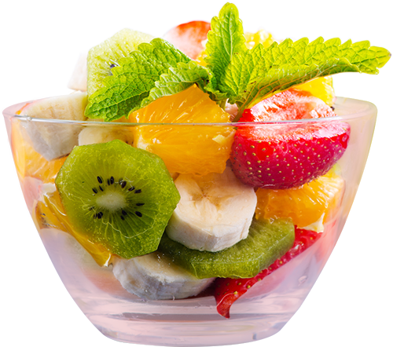

상그리아*과일을 드래그 해보세요!


와인을 좀 더 맛있고 예쁘게 하지만 간단하게 먹고 싶을 때는 상그리아 만한 것이 없다. 레시피도 아주 간단하며 맛을 잘 살려준다. 단 주의할 점이 있다면
한 번 만들어 놓으면 최대한 그날, 늦어도 3일 이내에 다 마시는 것을 추천한다. 지나치게 오래 재워놓으면 과일 껍질의 향만 우러나오는게 아니라 쓴맛까지 느껴지고 와인의 향이 다 날아가 맛이 없어진다.
스페인어인 '피(Sangre)'를 어원으로 하는 스페인의 대중적인 술로 와인에 여러가지 과일을 넣어 마시는 칵테일의 일종이다. 다양한 과일들과 설탕 등을 넣고 레드와인과 탄산수를 부어 하루 숙성시켜 먹는 스페인 전통음료이다. 상그리아는 주로 계절별 제철과일과 레드와인을 사용해 만들지만 화이트와인이나 포도주로 대체하여 만들 수 있어 활용도가 높다.

보통은 사과, 오렌지, 레몬을 사용하지만 기호와 제철에 따라 딸기, 키위, 수박, 복숭아 등 다양한 과일로 만들 수 있다. 다양한 과일을들 사용하기 때문에 알록달록한 색감은 물론 비주얼적으로도 예뻐서 사진찍기에도 최고다.

파티음료로 제격인 상그리아는 만드는 방법도 매우 쉽고 간단하여 홈파티에서 더 빛을 발한다.
와인은 도수가 좀 나가는(보통 13.5정도 되는) 레드와인이 잘 어울리는 편이다. 너무 낮은 도수의 와인일 경우에는 와인의 좋은 향이 죽고 과일향만 강하게 남게 되어 애매한 맛의 상그리아가 된다. 사용할 와인을 선택했다면 함께 만들어 보자.
1. 과일을 깨끗히 씻어 껍질이 있는 채로 얇게 썰어 담고 설탕을 넣는다.
2. 준비해둔 와인을 꺼내 설탕을 넣은 과일에 넣은 후 냉장고에 하루 숙성시킨다.
3. 숙성시킨 후 꺼내 탄산수를 취향만큼 넣어 마신다.

 
